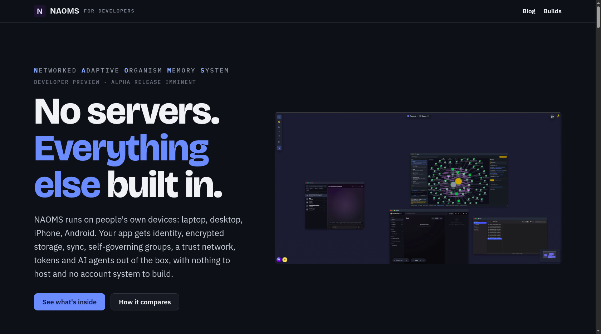
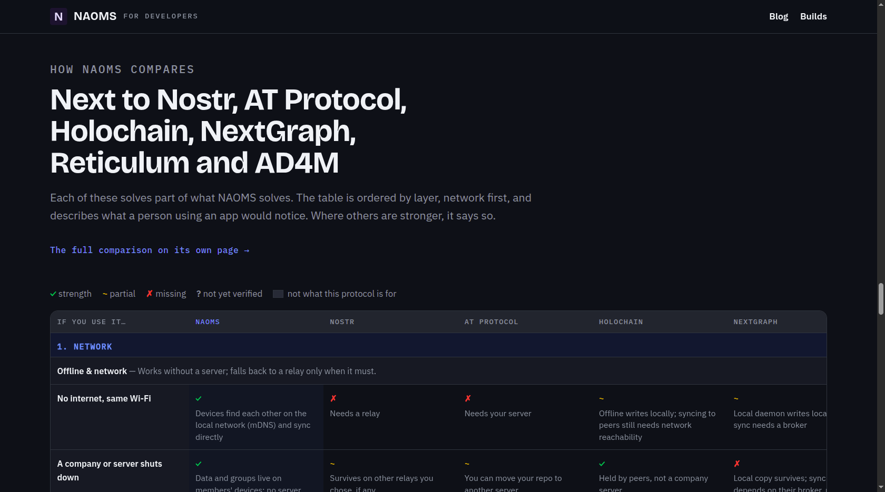
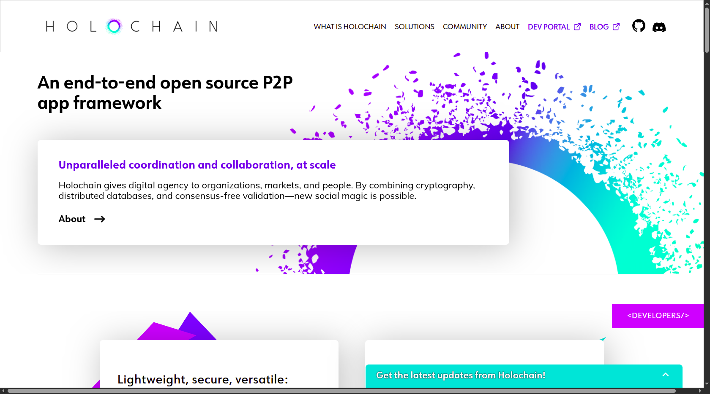

NAOMS (naoms.dev) is a local-first, peer-to-peer memory system: one daemon per device holds a person's signed histories, projects them into a graph, governs groups ("hives") and serves AI agents over MCP. This board reads it twice: first against Holochain, the substrate Nondominium is built on, then against Nondominium itself.
Researched and drafted by SoushAI, Soushi's AI assistant; reviewed and posted by @Soushi888. NAOMS was read from a source snapshot of 24 November 2026 (version 0.5.39, pre-release), Nondominium from dev at that date, Holochain from its primary sources (releases, changelogs, roadmap, dev pulses, developer docs, code). Repository sources are cited path:line. Each Holochain finding carries a confidence tag: HIGH (primary source read), MED (one source or dated source), LOW (absence of evidence), CONFLICT (sources disagree).
Counted by tool on 24 November 2026: the 51 comparison rows parsed from naoms.dev's #compare section, the audit below, and file counts from the NAOMS repository.
Holochain Foundation, since 2017. Beta 0.7.1 (14 Oct 2026), 0.8.0-dev.16 (23 Nov). CAL-1.0.
NAO / Allelo community, Ruben Daniels as contact. Version 0.5.39, 'pre-production', alpha 'imminent'. Alignment License 0.1 draft.
The diagrams follow each project's own vocabulary. Holochain from its glossary and data model docs; NAOMS from docs/architecture.md and docs/design/chain-architecture.md.
One row per axis that decides how the two differ. The confidence tag is for the row as a whole; the source column names where it was read.
| Axis | Holochain | NAOMS | Conf. | Sources |
|---|---|---|---|---|
| Unit of sovereignty | Agent per app: one cell, one key per DNA install | Being across contexts: per-device and per-agent DIDs under one seed | HIGH | glossary; docs/architecture.md:270-289 |
| History | One source chain per cell, signed actions | Many chains per being, multi-parent lanes per (chain, branch, signer) | HIGH | data model; docs/design/chain-architecture.md:16,37, src/core/chain/hive-membership-causal-fold.ts:8 |
| Replication | Sharded DHT, each node holds an arc | Full replication of what the trust graph allows; no DHT | HIGH | concepts; docs/design/inspiration/holochain.md:184 |
| Validation | Every authority re-runs the DNA's validation | Policy engine, reducers and validateGossipCommitOutcome at the receiver | HIGH | glossary; src/core/transport/gossip-validation.ts:476-502 |
| Bad actors | Warrants (invalid op, chain fork) lead to blocking, warrant-only since 0.7 | ChainForkError locally; no gossiped accountability record | HIGH | dev pulse 153; docs/design/chain-architecture.md:90 |
| Conflicts | A fork by one author is a warrantable violation; app-level updates are the app's to resolve | Device lanes avoid collisions; mostly last-writer-wins, Loro CRDT as a narrow tool | HIGH | data_model.md ChainFork; docs/understand/how-it-works/how-sync-works.md:23, docs/design/p2p-sync.md:37 |
| Transport | Kitsune2 over iroh 1.4, tx5 removed in 0.7.0 | iroh 1.2, iroh-gossip, iroh-blobs, mDNS, relay.naoms.dev | HIGH | dev pulse 156, kitsune2 Cargo.toml; rust/Cargo.toml:303-325, CHANGELOG.md:11 |
| Keys and recovery | Lair keystore; no rotation since DeepKey left the conductor; 0.8-dev restores a source chain from the DHT | BIP-39 phrase, FROST split across devices, removed device not yet cut off | HIGH | CHANGELOG; docs/understand/limits.md:48,112-118 |
| Privacy | Private entries stay on the chain; transport E2E; at-rest encryption a build feature | SQLCipher at rest, DIDComm authcrypt, MLS for calls (not chat) | HIGH | entries; docs/design/p2p-sync.md:23, docs/architecture.md:214-216 |
| Group encryption | None found | MLS (mls-rs 0.54) for call and media groups | LOW for Holochain | rust/Cargo.toml:366 |
| Groups | One DNA network per group, membrane proofs, checked in validation not at handshake | Hives: four-branch chain, governance modes (admins, consent, consensus, majority), member-held VRC | HIGH | dev pulse 153; docs/understand/hives/making-decisions.md:17 |
| App model | DNA bundles of Rust WASM zomes; coordinator updates 9% done | TypeScript packages with a typed manifest on the daemon | HIGH | roadmap; src/packages/ |
| Runtime | Conductor process; Kangaroo for desktop; wasmi backend for the App Store | Deno daemon + libnaoms_core over FFI, WASM in the browser, native mobile | HIGH | kangaroo-electron; docs/architecture.md:14-55 |
| Mobile | Not shipped; Mobile Build at 0%, planned 0.9.x; Android via p2p Shipyard historically | Android and iOS clients in the repo | HIGH | roadmap; clients/README.md:7-14 |
| AI | None in core; ai-tools repo of Claude Code skills, no MCP server yet | MCP over HTTP with ~190 tools, GGUF and MLX local models, whisper, voice | HIGH | ai-tools; docs/architecture.md:182-209 |
| Maturity | "initial Beta... ready for limited production use"; HDK stability 0/100 on the roadmap | "pre-production software"; CHANGELOG has only [Unreleased] | HIGH | holochain repo; docs/understand/how-it-works/system-maturity.md:14 |
| License | CAL-1.0 core; kitsune2 Apache-2.0; Lair Apache-2.0/MIT | Alignment License 0.1, alpha draft "No lawyer has reviewed this text" | HIGH | holochain repo; LICENSE:1-3 |
| naoms.dev, home | naoms.dev, its comparison table | holochain.org, home |
|---|---|---|
 |  |  |
naoms.dev compares NAOMS with six systems on 51 rows and says "Where others are stronger, it says so." I checked the 15 Holochain cells that Holochain's own sources can settle. 9 hold; 6 do not.
| Row on naoms.dev | What it says about Holochain | Verdict | Evidence |
|---|---|---|---|
| Two devices disagree | "Automatically merges both sides' changes together, by design" | Wrong | Two actions on one previous hash are a ChainFork warrant, not a merge (data_model.md) |
| A mature, battle-tested app framework | ✓ "A decade of development" | Overstated | Holochain calls itself "initial Beta... limited production use"; HDK stability 0/100 (roadmap); NAOMS's own note says "zero production users" (docs/design/inspiration/holochain.md) |
| You lose your phone | DeepKey "still unreleased" | Stale | DeepKey was removed from the conductor in 0.6.0-dev.0; 0.8-dev adds restore_from_dht for the chain, not the key (CHANGELOG) |
| Your key is compromised | A DeepKey revocation design "exists" | Stale, and worse | The revoke call left with DeepKey: no key rotation in the conductor today (same CHANGELOG) |
| On your phone | ✗ "No mobile support" | Partly right | Mobile Build 0%, planned 0.9.x (roadmap); but 0.7 added wasmi for the App Store and ran on an iPhone (dev pulse 156), and NAOMS's own note cites the Volla phone shipping Holochain apps |
| A tamper-proof way to package and move your data | ✗ "Not supported" | Partly right | No export format, but chains are hash-linked and signed, and 0.8-dev restores a chain from the DHT |
| Built on an internet transport (AD4M column) | "Holochain over Iroh" | Holds | iroh only since 0.7.0 |
| Devices per identity | ✗ per-app keys | Holds | No DPKI in the conductor |
| Store secrets | ~ Lair | Holds | Lair |
| How groups form | ✓ membrane proofs | Holds | glossary |
| Governance | ~ no named decision modes | Holds | validation rules only |
| Who can read your stuff | ~ transport encrypted, data signed | Holds | private entries and at-rest encryption feature exist, so "~" is fair |
| Building an app | ✓ signed bundles, enforced rules | Holds | DNA hash covers integrity zomes |
| Open standards | ~ own DNA/WASM format | Holds | |
| Age and readiness | ~ about 9 years, before 1.0 | Holds | first code 2017, 0.7.1 today |
docs/design/inspiration/holochain.md is a careful 360-line evaluation, last verified 2026-10-11. Three of its facts no longer hold:
Two conflicts inside NAOMS itself:
src/packages/holochain/ is still wired in (deno.json:170, maturity: experimental), while the Rust-core conversion spec says "holochain removed 2026-10-16" (.naoms/roadmap/1986-rust-core-conversion/spec/00-scope.md:50). CONFLICT.Nondominium is Sensorica's Holochain hApp for resources that no one can capture, built on Valueflows (Holochain 0.7.1, OVN License). NAOMS never mentions it: 0 files in its docs/ and src/ name Nondominium, Sensorica or open value networks. Read side by side, the two answer the same refusal from opposite ends: Nondominium starts from the resource that must stay uncapturable, NAOMS from the being that must stay sovereign. Sources: the Nondominium repository (documentation/, cited path:line) and the NAOMS repository.
Sensorica. Holochain 0.7.1, Valueflows via hREA, OVN License v1.0. NDO Layer 0 implemented; Layers 1 and 2 post-MVP.
NAO / Allelo. Own substrate on iroh. Contributions and tokens shipped; resource pooling designed, not built.
| Theme | Nondominium | NAOMS | Resonance | Sources |
|---|---|---|---|---|
| Purpose | Resources "uncapturable and resilient to monopolization. No Agent or group of Agents can control or delete Resources" | "we chose the option that keeps power with you and your community"; "no platform in the middle to take a cut" | Convergent: both are built against capture | ND requirements/requirements.md:5,22; NAOMS docs/understand/about/why-these-tradeoffs.md:39, docs/understand/vision/10-economics-governance.md § No platform tax |
| Governance placement | Governance-as-operator: the resource zome requests a transition, the governance zome evaluates the rules and approves or rejects | "Governance is not a page you visit"; one engine routes proposal, vote, attestation, decision for any chain with a contract branch | Convergent: governance as an operator on state, not an admin panel | ND requirements/governance.md:98-103; NAOMS 10-economics-governance.md:17-38 |
| Decision modes | Rules per resource and regime; no affiliation spectrum yet ("all validated agents treated equivalently") | Named group models: admins, owner, consent, consensus, majority | Complementary: NAOMS has the group decision modes Nondominium's governance gap names | ND requirements/governance.md:237; NAOMS docs/understand/hives/making-decisions.md:17 |
| Accountability | PPRs: private, cumulative, each pairwise receipt signed by both parties | Trust signals (VCs on an R-Card, "I vouch for their expertise") and role credentials from hive membership | Resonant, different trust: both are bilateral signed attestations; PPRs record acts between strangers, NAOMS signals record relationships | ND requirements/governance.md:148-188; NAOMS docs/glossary.md:205-215 |
| Economic events | Valueflows events (Commitment, Claim, ValidationReceipt) through hREA | contribution.record, .added, .retracted on hive chains; mutual credit, pooling and surplus distribution are designed, not built | Gap NAOMS could close with Valueflows: its only Valueflows mention is a note that another project does not use it | ND requirements/ndo_prima_materia.md:727; NAOMS 10-economics-governance.md:58-70, docs/design/inspiration/commitment-pooling.md:27 |
| What is held | NDO: identity first (Layer 0, lifecycle Ideation to EndOfLife), then specification and process; property regimes include Nondominium | Stewardship package: an identity for non-human beings (land, rivers, species) with FROST threshold signing by guardians | Resonant: a resource no one owns and a being that holds itself through guardians are close ideas | ND requirements/ndo_prima_materia.md:43,247; NAOMS src/packages/stewardship/README.md |
| Group shape | A Group DNA cloned per group, and one NDO DNA cloned per resource, each its own network | One hive per group: its own chain with contract, metadata, content and graph branches | Convergent: per-group network isolation on both sides | ND README.md § Architecture; NAOMS docs/design/chain-architecture.md:45 |
| Portability | "Roles and PPRs are local"; no VC or DID yet; planned Flowsta DID and a PortableCredential | DIDs (did:key, did:webvh) per device and per agent, W3C-format credentials | Complementary: NAOMS already has the portable identity Nondominium plans | ND requirements/agent.md:474,489; NAOMS docs/design/identity-model.md:47,73 |
| Trust between strangers | "Permissionless but accountable": any agent may act on a resource, peers validate, PPRs build reputation between parties who did not know each other | Friend-of-a-friend only: Appleseed-family propagation gives a stranger a weighted score when a trust path exists (TRUST_GATE_THRESHOLD = 0.6); greencheck proves a unique person without knowing them; with no path, the docs themselves say a stranger stays a stranger | Divergent: Nondominium is built for strangers, NAOMS for chains of acquaintance; the propagation has no Sybil defence yet (DE-68) and the decay the vision describes is not in the trust package | ND requirements/requirements.md:9; NAOMS src/packages/trust/trust-propagation.ts:79-101, docs/design/trust-model.md:49-63, docs/understand/philosophy/economics/blockchain-vs-hashgraph-sovereignty.md:189-191 |
| Memory | Reputation is cumulative by design | "Forgetting is a feature" (the Mystery axiom) | Tension: an accountable record and a right to forget pull apart | ND requirements/requirements.md:41; NAOMS docs/understand/about/design-principles.md:113 |
| License | OVN License v1.0: GPLv3 plus Peer Production reciprocity | Alignment License 0.1, an unreviewed alpha draft based on MPL 2.0 | Unknown: compatibility cannot be judged until NAOMS's text is final | ND LICENSE.md:1-7; NAOMS LICENSE:1-21 |
Nondominium: documentation/requirements/requirements.md, documentation/requirements/governance.md, documentation/requirements/agent.md, documentation/requirements/ndo_prima_materia.md, README.md, LICENSE.md, at dev on 24 November 2026.
NAOMS: the repository's docs/ and src/ as cited in each row, from a snapshot of 24 November 2026, among them docs/start-here.md, docs/architecture.md, docs/design/chain-architecture.md, docs/design/p2p-sync.md, docs/design/identity-model.md, docs/design/inspiration/holochain.md, docs/understand/about/design-principles.md, docs/understand/limits.md, docs/understand/hives/making-decisions.md, rust/Cargo.toml, CHANGELOG.md, LICENSE, deno.json, src/core/transport/gossip-validation.ts, src/packages/holochain/docs/design/design.md.
naoms.dev: home and #compare, Hives, Local models, Signed storage, Identity. The comparison table was read from the live page and parsed into its 51 rows.
Holochain: releases, CHANGELOG, roadmap, dev pulse 153, dev pulse 154, dev pulse 156, 0.7 upgrade guide, glossary, concepts, countersigning, entries, data_model.md, kitsune2, Lair, DeepKey, Launcher, kangaroo-electron, Moss, ai-tools.
Source: 2026-11-24-nondominium-and-naoms.md · theme: content/research/theme.css
Anything elsegeneral comments on the whole board, sent with your answers
✎Anything else
General comments on the whole board: what is missing, what is wrong, what to do next. It goes out with your answers.
Your comments are open in their panel.